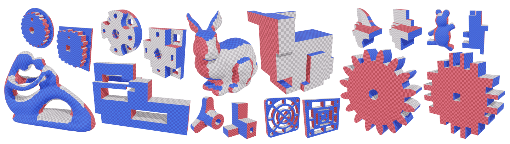

 Abstract
Polycube-maps are used as base-complexes in various fields of computational geometry,
including the generation of regular all-hexahedral meshes free of internal singularities.
However, the strict alignment constraints behind polycube-based methods make their
computation challenging for CAD models used in numerical simulation via Finite Element Method (FEM).
We propose a novel approach based on an evolutionary algorithm to robustly compute polycube-maps in this context.
We address the labeling problem, which aims to precompute polycube alignment
by assigning one of the base axes to each boundary face on the input.
Previous research has described ways to initialize and improve a labeling via greedy local fixes.
However, such algorithms lack robustness and often converge to inaccurate solutions for complex geometries.
Our proposed framework alleviates this issue by embedding labeling operations
in an evolutionary heuristic, defining fitness, crossover, and mutations
in the context of labeling optimization. We evaluate our method on a thousand smooth and CAD meshes,
showing Evocube converges to valid labelings on a wide range of shapes.
The limitations of our method are also discussed thoroughly.
Presentation
Citation
@article{dumery:evocube,
title = {{Evocube: a Genetic Labeling Framework for Polycube-Maps}},
author = {Dumery, Corentin and Protais, Fran{\c c}ois and Mestrallet, S{\'e}bastien and Bourcier, Christophe and Ledoux, Franck},
url = {https://doi.org/10.1111/cgf.14649},
journal = {{Computer Graphics Forum}},
publisher = {{Wiley}},
year = {2022},
month = Aug,
doi = {10.1111/cgf.14649},
volume = {41},
number = {6},
pages = {467--479},
}